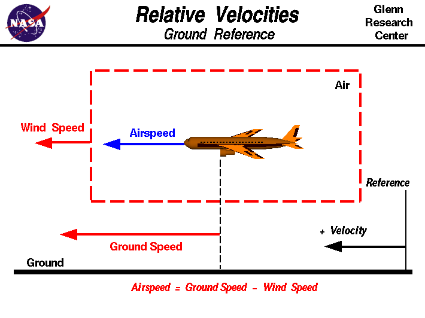

|

An interactive version of
this page is also available.
One of the most confusing concepts for young scientists is
the relative velocity between objects.
Aerodynamic forces
are generated by an object moving through a fluid (liquid or gas). A
fixed object in a static fluid does not generate aerodynamic forces.
Hot air balloons "lift" because of buoyancy forces
and some aircraft like the Harrier use thrust to
"lift" the vehicle, but these are not examples of aerodynamic lift.
To generate lift, an object must
move through the air, or air must move past the object.
Aerodynamic lift
depends on the square of the velocity between
the object and the air. Now things get confusing because not only can
the object be moved through the air, but the air itself can move. To
properly define the relative velocity, it is necessary to pick a fixed
reference point and measure velocities relative to the fixed point.
In this slide, the reference point is fixed to the ground, but it
could just as easily be fixed
to the aircraft itself.
It is important to understand the relationships of wind speed to
ground speed and airspeed.
Wind Speed
For a reference point picked on the ground, the air moves relative
to the reference point at the wind speed. Notice that the wind
speed is a
vector quantity
and has both a magnitude and a direction.
Direction is important.
A 20 mph wind from the west is different from a 20 mph wind from the
east. The wind has
components
in all three primary directions
(north-south, east-west, and up-down). In this figure, we are
considering only velocities along the aircraft's flight path. A
positive velocity is defined to be in the direction of the aircraft's
motion. We are neglecting cross winds, which
occur perpendicular to the flight path but parallel to the ground,
and updrafts and downdrafts, which occur
perpendicular to the ground.
Ground Speed
For a reference point picked on the ground, the aircraft moves
relative to the reference point at the ground speed.
Ground speed is also a
vector quantity
so a comparison of the ground speed to the wind speed must be
done according to rules for
vector comparisons.
Airspeed
The important quantity in the generation of lift is the relative
velocity between the object and the air, which is called the
airspeed. Airspeed cannot be directly measured from a ground
position, but must be computed from the ground speed and the wind
speed. Airspeed is the
vector difference
between the ground speed and the wind speed.
Airspeed = Ground Speed - Wind Speed
On a perfectly still day, the airspeed is equal to
the ground speed. But if the wind is blowing in the same direction
that the aircraft is moving, the airspeed will be less than the
ground speed.
Examples
Suppose we had an airplane that could take off on a windless day
at 100 mph (liftoff airspeed is 100 mph).
We are at an airport with an east-west runway that is 1 mile long.
The wind is blowing 20 mph towards the west and the
airplane takes off going east.
The wind is blowing towards the aircraft which we call a
headwind.
Since we have defined a positive velocity to be in the
direction of the aircraft's motion, a headwind is a negative
velocity. While the plane is sitting still on the runway, it has a
ground speed of 0 and an airspeed of 20 mph:
Airspeed = Ground Speed (0) - Wind Speed (-20) = 20 mph
The airplane starts its take off roll and has a constant acceleration a.
From Newton's second law of
motion,
the ground speed V at any time t is:
V = a * t
and the distance d down the runway at any time is:
d = 1/2 * a * t^2
For a fixed length runway, this specifies the time to be used in the
velocity equation. Let's assume that at 5000 feet down the runway, the
velocity is 80 mph. Then the airspeed is given by
Airspeed = Ground Speed (80) - Wind Speed (-20) = 100 mph
and the airplane begins to fly. Now another pilot, with exactly
the same airplane decides to take off to the west. The wind is
now in the same direction as the motion and this is called a
tailwind. The sign on the wind speed is now positive,
not negative as with the headwind.
The acceleration along the ground is the same,
so at 5000 feet down the runway, the ground speed is again 80 mph.
The airspeed is then given by:
Airspeed = Ground Speed (80) - Wind Speed (20) = 60 mph
This airplane doesn't have enough airspeed to fly. It runs off
the end of the runway!
Significance of Understanding Relative Velocity
The importance of the relative velocity explains why airplanes
take off and land on different runways on different days. Airplanes
always try to take off and land into the wind. This requires a lower
ground speed to become airborne, which means the plane
can take off or land in the shortest distance traveled along the
ground. Since runways have a fixed length, you want to get airborne
as fast as possible on takeoff and stopped as soon as possible on
landing. In the old days, a large "wind sock" was hung near the
runway for pilots to see which way the wind was blowing to adjust
their takeoff and landing directions. Now mechanical or electronic
devices provide the information that is radioed to the cockpit.
The relationship between airspeed, wind speed, and ground speed
explains why wind tunnel testing is
possible and how
kites
fly.
- In the wind tunnel, the ground speed is zero because the model is
fixed to the walls of the tunnel. The airspeed is then the
negative of the wind speed that is generated in the tunnel.
Whether the object moves through the air, or the air moves over
the object, the forces are the same.
- A kite usually has no ground speed because a kite is held on the
end of a
string.
But the kite still has an airspeed that is equal
to the wind speed. You can
fly
a kite only with the wind at your
back.
Activities:


Guided Tours
-
 Into the Wind:
Into the Wind:

Navigation ..


- Beginner's Guide Home Page
|